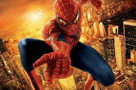

Mi nombre es Kevin Yassir Fuentes García.
No soy un cinéfilo, ni mucho menos un crítico del cine, pero la siguiente recopilación de obras, la he hecho según cuánto he disfrutado o disfruto ver dichas películas.
En gustos se rompen géneros

TOP 5
-
Spiderman 1 (2002)
-
Spiderman 2 (2004)

-
Avengers Endgame (2019)
-
A beautiful mind
-
Shrek 1

Actores: Tobey Maguire, Willem Dafoe, Kirsten Dunst, James Franco, Cliff Robertson, Rosemary Harris, J. K. Simmons
Directores: Sam Raimi
Año de lanzamiento: 2002
Opinión propia:
Spiderman es mi superhéroe favorito, fue la primera película de superhéroes que vi, creo que esta película es un hito en las películas de MARVEL. No la vi en cines pues apenas tenía un año cuando se estrenó, pero recuerdo que mi papá la rentó en formato VHD, pero me gustó tanto que la repetí incansablemente y mi papá decidió comprar el VHD a la casa de películas. Es una película muy emocionante, es inevitable acordarse de la escena es que Peter Parker descubre que puede lanzar telarañas y que sus dedos eran capaces de mantenerse pegados a las paredes, estoy seguro de que más de uno que vio la película intentó hacer lo mismo en la pared de su casa. Otra escena icónica es cuando Peter tiene la pelea con Flash en el pasillo de casilleros, es inevitable acordarse de cómo activa su instinto arácnido para esquivar los golpes. El duende verde es perfectamente interpretado, de igual forma el intérprete de Harry encaja muy bien. El final es algo inolvidable, por un momento Peter estaba débil, ensangrentado y con la máscara rota. Fue ahí que el duende verde reconoció la identidad de Spiderman, pero toda su maldad y su propia arma terminó regresándosele en su contra.
Música:
Video promocional:
Actores: Tobey Maguire, Kirsten Dunst, Alfred Molina, James Franco, J.K. Simmons, Daniel Gillies, Rosemary Harris, Dylan Baker.
Directores: Sam Raimi
Año de lanzamiento: 2004
Opinión propia:
Esta secuela fue la primera que logré ver en cines, me emocionó mucho ver al hombre araña en la pantalla grande. La escena que más recuerdo es cuando Spiderman detiene el tren antes de caer al precipicio. Pero me partió el corazón la parte de la película en la que Harry Osborn descubre que Peter Parker (su mejor amigo) fue quien causó la muerte de su padre, principalmente por el hecho de que Peter no se detiene a explicarle las razones, pues se encuentra en busca del Doctor Octopus para salvar a MJ y a Nueva York.
Música:
Video promocional:
Actores: Robert Downey Jr., Chris Evans, Mark Ruffalo, Chris Hemsworth, Tom Holland, Scarlett Johansson, Jeremy Renner, Don Cheadle, Paul Rudd, Brie Larson, Karen Gillan, Danai Gurira, Benedict Wong, Jon Favreau, Bradley Cooper, Gwyneth Paltrow,Josh Brolin,
Directores: Anthony y Joe Russo
Año de lanzamiento: 2019
Opinión propia:
Endgame ha sido una gran película, ver a todos los superhéroes reunir su fuerza y conocimiento para salvar al mundo ha sido verdaderamente Emocionante, la película ha sido la más importante del Universo Marvel. Aunque, para un fanático, duele ver la muerte de Tony Stark y el retiro del Capitán América. Endgame es una guerra llena de emoción y suspenso y por eso la considero de mis favoritas.
Sinopsis:
Durante este tiempo, los objetos llamados Infinity Stones (Gemas del Infinito) jugaron un papel importante en la mayoría de las historias en las películas de Marvel. Hay seis gemas: Mente, Poder, Realidad, Alma, Espacio y Tiempo, y todas son muy poderosas. La Gema del Espacio apareció por primera vez en una escena tras los créditos en "Thor" en 2011 en forma de un Cubo Cósmico (Tesseract). Este artículo también apareció en "Capitán América: El Primer Vengador" y "Thor: Ragnarok". También lo vimos en "Capitana Marvel", donde el gato Goose se lo traga. La Gema de la Mente primero fue propiedad de Lok, y más tarde desempeñó un papel importante en "Capitán América: el Soldado del Invierno" y en "Avengers: era de Ultrón". La Gema de la Realidad formó parte de la trama de "Thor: un mundo oscuro" en 2013, y la Gema del Poder fue lo que reunió a los "Guardianes de la Galaxia" con el Universo Cinematográfico de Marvel (MCU) en 2014. La Gema del Tiempo apareció en 2016 en "Doctor Strange: hechicero supremo", y la Gema del Alma se vio por primera vez en "Avengers: Infinity War" el año pasado. Durante este tiempo, Thanos, el supervillano alienígena purpura de Marvel, estuvo detrás de las seis gemas para completar su Guantelete del Infinito. Se trata de un guante poderoso y malvado que Thanos quiere usar para eliminar a la mitad de las criaturas vivientes del universo con el fin de proporcionar más recursos para los que quedan. Las cosas no salieron como fueron planeadas en "Avengers: Infinity War". Los superhéroes perdieron y el plan de Thanos tuvo éxito. Así que es mejor que haya otra película para poner las cosas en su lugar. Al final de "Infinity war", Iron Man y Nebula quedaron varados en el planeta Titán, donde no pudieron robarle el Guantelete del Infinito a Thanos. Un primer avance de "Endgame" mostró a Tony Stark (Robert Downey Jr) enviando un mensaje de despedida a Pepper Potts (interpretado por Gwyneth Paltrow) desde una nave espacial sin energía, pero nadie cree realmente que un personaje tan importante como el de Tony saldría así de la película. Después de los eventos devastadores de Avengers: Infinity War, el universo está en ruinas debido a las acciones de Thanos, el Titán Loco. Con la ayuda de los aliados que quedaron, los Vengadores deben reunirse una vez más para deshacer sus acciones y restaurar el orden en el universo de una vez por todas, si importar cuáles son las consecuencias.
Crítica de otras personas:
El sitio web del agregador de revisiones Rotten Tomatoes informó una calificación de aprobación del 95% con un puntaje promedio de 8.3/10, basado en 484 revisiones. El consenso de críticos del sitio web dice: "Emocionante, entretenido y emocionalmente impactante, Avengers: Endgame hace lo que sea necesario para entregar un final satisfactorio a la épica Infinity Saga de Marvel". Metacritic, que utiliza un promedio ponderado, asignó a la película una puntuación de 78 de 100 basada en 57 críticas, lo que indica "críticas generalmente favorables". El público encuestado por CinemaScore le dio a la película una calificación excepcional de "A+", mientras que los de PostTrak le dieron 5 de 5 estrellas y una "recomendación definitiva" del 85%.
Música:
Video promocional:

Actores: Russell Crowe Ed Harris, Jennifer Connelly, Christopher Plummer, Paul Bettany, Adam Goldberg, Josh Lucas.
Directores: Ron Howard
Año de lanzamiento: 2001
Opinión propia
Esta película se ha vuelto una de mis favoritas, su trama es espectacular, habla primordialmente de las matemáticas y su poder en el mundo, mediante la historia real de John Forbes Nash, la cual se desarrolla con bastante suspenso. Este matemático se ha vuelto inspiración de todos aquellos fanáticos de esta rama del conocimiento. Durante la película se menciona el nombre de eminencias de las matemáticas y la física, tales como Albert Einstein, Godel, Riemann, Fermat, Cauchy, Gauss y Lagrange. Además de que presenta de manera muy condensada y a modo de película, algunos avances o descubrimientos de estos personajes.
Sinopsis
La historia empieza narrando cómo fue la vida universitaria del protagonista porque este es un momento importante en su vida en el cual se intensifica su proceso de formación científica. Una mente brillante narra la historia de John Forbes Nash quien ganó el Premio Nobel de Economía en el año 1994 y quien, para obtener este reconocimiento, además del mérito científico y académico que representa, debió lidiar con la esquizofrenia que afectó todos los aspectos de su vida, incluso alterando intervenciones públicas como la que pone en escena la película de su conferencia en la Universidad de Harvard.
John Forbes Nash llega a la Universidad de Princeton por una beca para estudiar matemáticas; allí conoce a su compañero de cuarto Charles Herman y a su rival Hansen. Conforme transcurre el tiempo Nash se ve presionado para avanzar en su trabajo de investigación, pero se niega a hacerlo porque cree que no debe ser así hasta tener una idea original, además de que se niega a ceñirse a los métodos que propone la academia para producir ideas y para aprender, lo que nos hace pensar que en muchos de los casos de los genios que ha tenido la humanidad no siempre tienen la mejor de las relaciones con la academia.
No obstante, alcanza su inspiración cuando junto a sus amigos están ingeniándose la forma de conquistar un grupo de mujeres en un bar. Así, desarrolla la idea de cooperación contraargumentando las ideas de Adam Smith, lo que ocasiona su inminente publicación y lo que le vale el reconocimiento del Pentágono para descifrar los códigos de comunicaciones de los rusos en el contexto de la Guerra Fría.
Luego, la trama se empieza a acelerar porque Nash adquiere una doble vida, pues al mismo tiempo inicia un romance con una de sus alumnas quien más tarde sería su esposa y la mujer quien cuidaría de su enfermedad, también adquiere el trabajo que lo llevaría a su más grande conflicto.
La película llega a su clímax cuando Nash ingresa al hospital psiquiátrico y empieza la lucha de voluntades propias de conflicto y que aportan a la construcción de un guion sólido. En este caso, se trata del enfrentamiento entre un ingenioso matemático y su mente que por un momento parece que le estuviera jugando una mala pasada tanto al protagonista como al espectador, pues mientras que el personaje lucha por controlar su condición, el público debe discernir lo que es invención de la mente del personaje y lo que es la realidad del mismo.
Música:
Video promocional:

Personajes:
Actores de doblaje al español: Alfonso Obregón, Eugenio Derbez, Dulce Guerrero, Humberto Vélez.
Directores: Andrew Adamson, Vicky Jenson
Año de lanzamiento: 2001
Opinión propia:
Shrek 1 es de esas películas de la infancia que a cualquier edad que la vea me llenará de buena vibra. La incluyo principalmente por los buenos fines de semana que me hizo pasar en compañía de mis primos en casa de los abuelos. Es una película infantil, divertida, llena de muchas ocurrencias. No es ni tan aniñada, ni mucho menos obscena. Es una película en donde considero que los actores de doblaje tienen mucho que ver. Es una película que creo que a muchos nos ha gustado.
Sinopsis:
La historia comienza como los cuentos de hadas: "Érase una vez una princesa que esperaba ser rescatada por su príncipe...". Por otro lado en un pantano muy lejano vivía un ogro cascarrabias llamado Shrek, cuya preciada soledad se ve imprevistamente convulsionada por molestos personajes de cuentos. Le aparecen ratones ciegos en la comida, un lobo grande y malo en la cama, tres cerditos que no tienen dónde ir, y muchos más, todos ellos expulsados de su reino por el malvado Lord Farquaad. Decidido a devolverlos a su reino, y salvar el suyo de intrusos, Shrek hace un arreglo con Farquaad, y parte en rescate de la bella Princesa Fiona, con quien Farquaad se casará. En la misión lo acompaña un burro sabelotodo, que está dispuesto a hacer cualquier cosa por Shrek menos callarse la boca. Al llegar al castillo, Burro es el encargado de distraer a la dragona, quien se enamora de él. Shrek logra rescatar a la princesa y huyen dejando a la dragona triste. En el camino de regreso, Fiona y Shrek comienzan una amistad. La princesa Fiona tiene un secreto, fue hechizada cuando era una niña, al caer la noche se convertía en ogra sólo el beso de su amor verdadero la haría tomar su verdadera forma. El ogro va en busca de Lord Farquaad para entregarle a la princesa. Ella conoce a Lord Farquaad y se sorprende de su corta estatura y arrogante actitud. Shrek recupera las escrituras de su pantano para volver a vivir solo y Fiona acepta casarse con Lord Farquaad antes del anochecer para que no se de cuenta de su hechizo. Shrek regresa a su pantano, el burro lo sigue y le comenta que no puede dejar que le quiten a Fiona, que debe luchar por su amor. Shrek decide ir por Fiona. Burro, inesperadamente llama a la dragona y vuelan a la iglesia donde se celebraba la boda. Al llegar, Shrek interrumpe y aclara todo, y sin importar las burlas de la gente, ellos se dan el beso de amor verdadero quedando así Fiona transformada en una ogra para siempre.
Música:
Video promocional:
A continuación se muestra un cameo de Shrek con nuestro señor presidente, mientras comen barbacoa de Tulancingo: